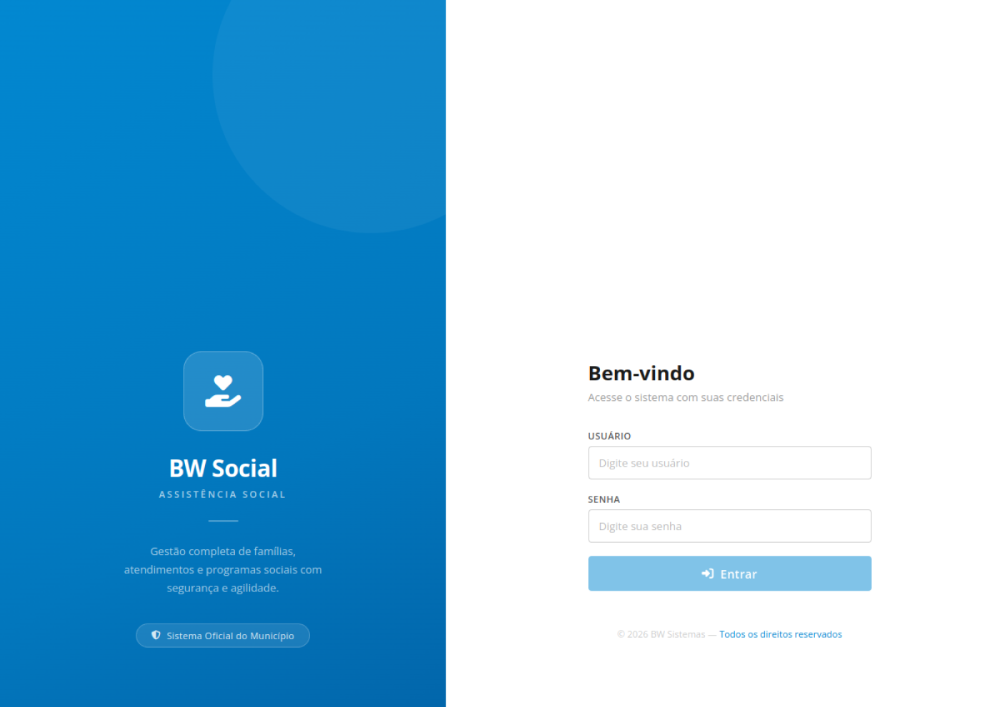

ESTUDO DE CASO · ASSISTÊNCIA SOCIAL
BW Social
Experiência profissional no desenvolvimento e na evolução de uma plataforma de gestão da assistência social.
Abrir o sistema original ↗CAPTURA DO SISTEMA ORIGINAL
Tela pública de acesso do BW Social

Captura da tela pública, sem autenticação e sem informações de famílias, usuários ou atendimentos. A imagem registra a interface original; o protótipo de portfólio não substitui nem simula o sistema operacional.
CONTEXTO PROFISSIONAL
Produto e domínio
O sistema apoia a gestão de famílias, atendimentos e programas sociais. Meu trabalho esteve ligado ao desenvolvimento e à evolução de funcionalidades para esse domínio.
O código de demonstração é independente e usa dados sintéticos. A imagem acima é a única captura do sistema original; ela foi incluída com autorização e mostra somente a tela de acesso pública.
Arquitetura e decisões técnicas ↗